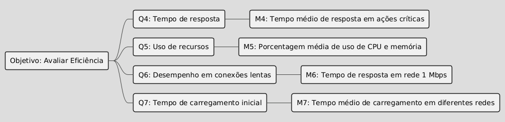

GQM – Fase Definição
Objetivo de negócio do AGROMART
Solução web e mobile com o objetivo de facilitar a relação entre os pequenos agricultores e os consumidores, visando proporcionar ao pequeno agricultor uma maior garantia para o escoamento de sua produção e ajudar pessoas que buscam uma alimentação mais saudável e de qualidade a encontrar seus produtos.
Objetivo de Medição 1: Usabilidade
| Elemento | Descrição |
|---|---|
| Analisar | Agromart |
| Para o propósito de | entender a facilidade de uso e satisfação do usuário |
| Com respeito a | usabilidade da interface e experiência do usuário |
| Do ponto de vista da | usuários finais (agricultores e consumidores) |
| No contexto de | uso real em dispositivos móveis e web |
Questões e Hipóteses
-
Q1: Os usuários conseguem navegar facilmente pelas funcionalidades principais do sistema?
Hipótese Q1: Uma parte dos usuários pode encontrar dificuldades em acessar e utilizar os recursos principais (ex: busca de produtos, cadastro de itens). -
Q2: Os usuários estão satisfeitos com o design e a responsividade da interface?
Hipótese Q2: A interface adaptada para dispositivos web é melhor avaliada em testes de usabilidade. -
Q3: O tempo necessário para realizar tarefas básicas é compatível com as expectativas dos usuários?
Hipótese Q3: Usuários levam menos de 2 minutos para realizar ações como cadastrar produtos ou realizar pedidos.
Abstraction Sheet
| Objeto | Propósito | Foco da Qualidade | Ponto de Vista |
|---|---|---|---|
| Produto Entregue | Compreensão | Usabilidade | Usuário Final |
Foco da Qualidade
|
Fatores de Variação
|
Hipótese de Baseline
|
Impacto dos Fatores de Variação
|
Especificação da Avaliação
Métricas e Critérios
| Questão | Métrica (Q-RAPID) | Unidade | Nível Aceitável | Critério de Julgamento |
|---|---|---|---|---|
| Q1 | Taxa de conclusão de tarefas | % | ≥ 80% | < 70% = Crítico; 70-79% = Alerta |
| Q2 | Pontuação NPS (Usabilidade) | Escala 0-10 | ≥ 7 | < 7 = Insatisfatório |
| Q3 | Tempo médio por tarefa | Segundos | ≤ 120s | > 150s = Necessita otimização |
Gráfico Hierárquico
Figura 1 - Diagrama de Objetivo de Medição 1: Usabilidade
Objetivo de Medição 2: Eficiência
| Elemento | Descrição |
|---|---|
| Analisar | Agromart |
| Para o propósito de | avaliar seu desempenho sob diferentes condições de uso |
| Com respeito a | eficiência |
| Do ponto de vista da | equipe técnica |
| No contexto de | uso real em dispositivos móveis, desktops e diferentes conexões de internet |
Questões e Hipóteses
-
Q4: O sistema responde às ações do usuário em tempo aceitável?
Hipótese Q4: O tempo médio de resposta das ações críticas é inferior a 1 segundo em 90% dos testes. -
Q5: O consumo de memória e CPU permanece dentro de limites aceitáveis durante o uso?
Hipótese Q5: O uso de memória e CPU não ultrapassa 70% dos recursos disponíveis em dispositivos de teste. -
Q6: O desempenho se mantém estável em diferentes velocidades de conexão?
Hipótese Q6: A aplicação mantém funcionalidade básica e responde em até 3 segundos mesmo em conexões de 1 Mbps. -
Q7: O tempo de carregamento inicial do sistema é adequado?
Hipótese Q7: O sistema carrega completamente em até 2 segundos em redes Wi-Fi e até 5 segundos em redes móveis.
Abstraction Sheet
| Objeto | Propósito | Foco da Qualidade | Ponto de Vista |
|---|---|---|---|
| Produto Entregue | Avaliação | Eficiência | Equipe de Desenvolvimento |
Foco da Qualidade
|
Fatores de Variação
|
Hipótese de Baseline
|
Impacto dos Fatores de Variação
|
Especificação da Avaliação
Métricas e Critérios
| Questão | Métrica (Q-RAPID) | Unidade | Nível Aceitável | Critério de Julgamento |
|---|---|---|---|---|
| Q4 | Latência de resposta | ms | ≤ 1000 | > 1500ms = Falha |
| Q5 | Uso médio de CPU | % | ≤ 70% | > 85% = Risco de instabilidade |
| Q6 | Tempo resposta (1Mbps) | ms | ≤ 3000 | > 4000ms = Inaceitável |
| Q7 | Tempo carregamento inicial | segundos | ≤ 5 (mobile) | > 8s = Necessita otimização |
Gráfico Hierárquico

Figura 2 - Diagrama de Objetivo de Medição 2: Eficiência
Tabela de Contribuição
| Matrícula | Nome completo | Contribuição (%) |
|---|---|---|
| 190102977 | Artur Ricardo dos Santos Lopes | 16,7% |
| 221007690 | Diego Carlito Rodrigues de Souza | 16,7% |
| 221008060 | Gabriel Moura dos Santos | 16,7% |
| 211029361 | João Pedro Nóbrega Fernandes | 16,7% |
| 221008300 | Marcos Antonio Teles de Castilhos | 16,7% |
| 221008481 | Víctor Moreira Almeida | 16,7% |
Histórico de Versão
| Versão | Data | Autor | Descrição | Revisor |
|---|---|---|---|---|
1.0 |
27/05/2025 | Diego Carlito | Criação do documento | Gabriel Moura |
1.1 |
28/05/2025 | Diego Carlito | Melhora o Abstraction Sheet | Gabriel Moura |
1.2 |
08/07/2025 | Víctor Moreira | Especificação da Avaliação | João Pedro Nóbrega |